Matplotlib in Mantid#
Other Plotting Documentation
Help Documentation
Introduction#
Mantid can now use Matplotlib to produce figures. There are several advantages of using this software package:
it is python based, so it can easily be incorporated into Mantid scripts
there is a large user community, and therefore excellent documentation and examples are available
it is easy to change from plotting on the screen to produce publication quality plots in various image formats
While Matplotlib is using data arrays for inputs in the plotting routines, it is now possible to also use several types on Mantid workspaces instead. For a detailed list of functions that use workspaces, see the documentation of the mantid.plots module.
This page is intended to provide examples about how to use different Matplotlib commands for several types of common task that Mantid users are interested in.
To understand the matplotlib vocabulary, a useful tool is the “anatomy of a figure”, also shown below.
(Source code, png, hires.png, pdf)


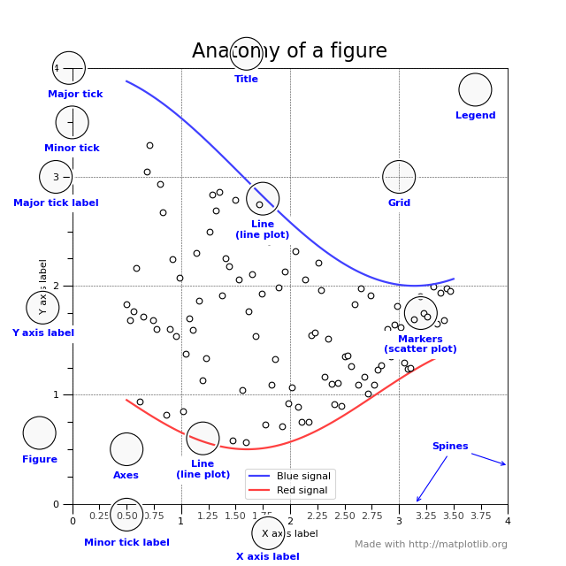
Here are some of the highlights:
Figure is the main container in matplotlib. You can think of it as the page
Axes is the coordinate system. It contains most of the figure elements, such as Axis, Line2D, Text. One can have multiple Axes objects in one Figure
Axis is the container for the ticks and labels for the x and y axis of the plot
Showing/saving figures#
There are two main ways that one can visualize images produced by matplotlib. The first one is to pop up a window with the required graph. For that, we use the show() function of the figure.
import matplotlib.pyplot as plt
fig,ax=plt.subplots()
#some code to generate figure
fig.show()
If one wants to save the output, the figure object has a function called savefig. The main argument of savefig is the filename. Matplotlib will figure out the format of the figure from the file extension. The ‘png’, ‘ps’, ‘eps’, and ‘pdf’ extensions will work with almost any backend. For more information, see the documentation of Figure.savefig Just replace the code above with:
import matplotlib.pyplot as plt
fig,ax=plt.subplots()
#some code to generate figure
fig.savefig('plot1.png')
fig.savefig('plot1.eps')
Sometimes one wants to save a multi-page pdf document. Here is how to do this:
import matplotlib.pyplot as plt
from matplotlib.backends.backend_pdf import PdfPages
with PdfPages('/home/andrei/Desktop/multipage_pdf.pdf') as pdf:
#page1
fig,ax=plt.subplots()
ax.set_title('Page1')
pdf.savefig(fig)
#page2
fig,ax=plt.subplots()
ax.set_title('Page2')
pdf.savefig(fig)
Simple plots#
For matrix workspaces, if we use the mantid projection, one can plot the data in a similar fashion as the plotting of arrays in matplotlib. Moreover, one can combine the two in the same figure
import numpy as np
import matplotlib.pyplot as plt
from mantid import plots
from mantid.simpleapi import CreateWorkspace
# Create a workspace that has a Gaussian peak
x = np.arange(20)
y0 = 10.+50*np.exp(-(x-10)**2/20)
err=np.sqrt(y0)
y = 10.+50*np.exp(-(x-10)**2/20)
y += err*np.random.normal(size=len(err))
err = np.sqrt(y)
w = CreateWorkspace(DataX=x, DataY=y, DataE=err, NSpec=1, UnitX='DeltaE')
# Plot - note that the projection='mantid' keyword is passed to all axes
fig, ax = plt.subplots(subplot_kw={'projection':'mantid'})
ax.errorbar(w,'rs') # plot the workspace with errorbars, using red squares
ax.plot(x,y0,'k-', label='Initial guess') # plot the initial guess with black line
ax.legend() # show the legend
#fig.show()
(Source code, png, hires.png, pdf)


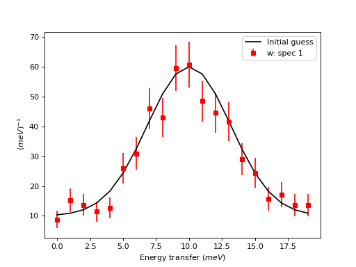
Some data should be visualized as two dimensional colormaps
import matplotlib.pyplot as plt
from mantid import plots
from mantid.simpleapi import Load, ConvertToMD, BinMD, ConvertUnits, Rebin
from matplotlib.colors import LogNorm
# generate a nice 2D multi-dimensional workspace
data = Load('CNCS_7860')
data = ConvertUnits(InputWorkspace=data,Target='DeltaE', EMode='Direct', EFixed=3)
data = Rebin(InputWorkspace=data, Params='-3,0.025,3', PreserveEvents=False)
md = ConvertToMD(InputWorkspace=data,
QDimensions='|Q|',
dEAnalysisMode='Direct')
sqw = BinMD(InputWorkspace=md,
AlignedDim0='|Q|,0,3,100',
AlignedDim1='DeltaE,-3,3,100')
#2D plot
fig, ax = plt.subplots(subplot_kw={'projection':'mantid'})
c = ax.pcolormesh(sqw, norm=LogNorm())
cbar=fig.colorbar(c)
cbar.set_label('Intensity (arb. units)') #add text to colorbar
#fig.show()
(Source code, png, hires.png, pdf)


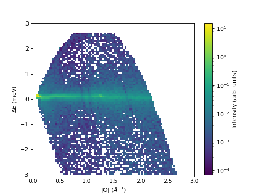
Some data is best visualized as a Marker type workspace with no lines connecting the points. Matrix workspace has some built-in functions to simplify plotting Marker type workspaces.
import numpy as np
import matplotlib.pyplot as plt
from mantid import plots
from mantid.simpleapi import CreateWorkspace
# Generate random x and y values for two workspaces
x1 = np.arange(20)
y1 = np.random.uniform(5, 50, len(x1)) # Random values between 5 and 50
x2 = np.arange(20)
y2 = np.random.uniform(10, 55, len(x2)) # Different random values
# Create a marker workspace
w1 = CreateWorkspace(DataX=x1, DataY=y1, NSpec=1)
w1.setPlotType('marker')
# Create a second marker workspace
w2 = CreateWorkspace(DataX=x2, DataY=y2, NSpec=1)
w2.setPlotType('marker')
w2.setMarkerStyle('circle')
w2.setMarkerSize(4)
# Plot using the mantid projection
fig, ax = plt.subplots(subplot_kw={'projection': 'mantid'})
ax.plot(w1) # First marker workspace
ax.plot(w2) # Second marker workspace with different style marker
ax.set_title("Marker Workspace Example") # Set plot title
ax.legend() # Show the legend
plt.show()
(Source code, png, hires.png, pdf)


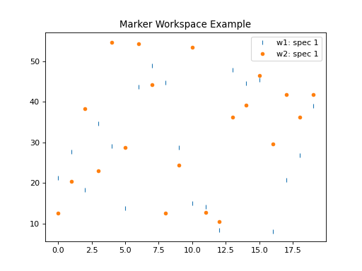
One can then change properties of the plot. Here is an example that changes the label of the data, changes the label of the x and y axis, changes the limits for the y axis, adds a title, change tick orientations, and adds a grid
import numpy as np
import matplotlib.pyplot as plt
from mantid import plots
from mantid.simpleapi import CreateWorkspace
# Create a workspace that has a Gaussian peak
x = np.arange(20)
y0 = 10.+50.*np.exp(-(x-10.)**2/20.)
err=np.sqrt(y0)
y = 10.+50*np.exp(-(x-10)**2/20.)
y += err*np.random.normal(size=len(err))
err = np.sqrt(y)
w = CreateWorkspace(DataX=x, DataY=y, DataE=err, NSpec=1, UnitX='DeltaE')
# Plot - note that the projection='mantid' keyword is passed to all axes
fig, ax = plt.subplots(subplot_kw={'projection':'mantid'})
ax.errorbar(w,'rs', label='Data')
ax.plot(x,y0,'k-', label='Initial guess')
ax.legend()
ax.set_xlabel('Better energy estimate ($10^3\mu eV$)')
ax.set_ylabel('Neutron counts')
ax.set_ylim(-10,100)
ax.set_title('Gaussian example')
ax.tick_params(axis='x', direction='in')
ax.tick_params(axis='y', direction='out')
ax.grid(True)
#fig.show()
(Source code, png, hires.png, pdf)


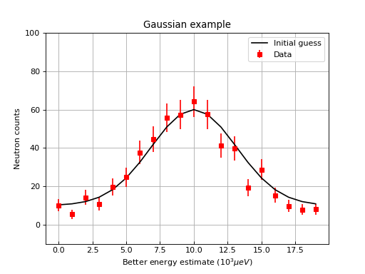
Let’s create now a figure with two panels. In the upper part we show the workspace as above, but we add a fit, In the bottom part we add the difference.
import numpy as np
import matplotlib.pyplot as plt
from mantid import plots
from mantid.simpleapi import CreateWorkspace, Fit
# Create a workspace that has a Gaussian peak
x = np.arange(20)
y0 = 10.+50*np.exp(-(x-10)**2/20)
err=np.sqrt(y0)
y = 10.+50*np.exp(-(x-10)**2/20)
y += err*np.random.normal(size=len(err))
err = np.sqrt(y)
w = CreateWorkspace(DataX=x, DataY=y, DataE=err, NSpec=1, UnitX='DeltaE')
result = Fit(Function='name=LinearBackground,A0=10,A1=0.;name=Gaussian,Height=60.,PeakCentre=10.,Sigma=3.',
InputWorkspace='w',
Output='w',
OutputCompositeMembers=True)
# The handle to the output workspace is result.OutputWorkspace. The first spectrum is the data,
# the second is the fit, the third is the difference. Subsequent spectra are the calculated
# functions of each of the components of the fit (here LinearBackground and Gaussian)
# Note that the difference spectrum has 0 errors. One can copy the errors from data
result.OutputWorkspace.setE(2,result.OutputWorkspace.e(0))
#do the plotting
fig, [ax_top, ax_bottom] = plt.subplots(figsize=(9, 6),
nrows=2,
ncols=1,
sharex=True,
gridspec_kw={'height_ratios':[2,1]},
subplot_kw={'projection':'mantid'})
ax_top.errorbar(result.OutputWorkspace,'rs',wkspIndex=0, label='Data')
ax_top.plot(result.OutputWorkspace,'b-',wkspIndex=1, label='Fit')
ax_top.legend()
ax_top.set_xlabel('')
ax_top.set_ylabel('Neutron counts')
ax_top.tick_params(axis='both', direction='in')
ax_bottom.errorbar(result.OutputWorkspace,'ko',wkspIndex=2)
ax_bottom.tick_params(axis='both', direction='in')
ax_bottom.set_ylabel('Difference')
fig.tight_layout()
#fig.show()
(Source code, png, hires.png, pdf)


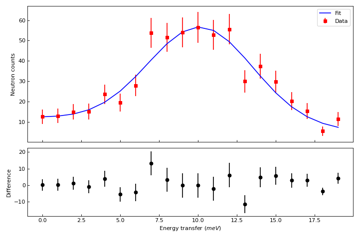
One can do twin axes as well:
import numpy as np
import matplotlib.pyplot as plt
from mantid.simpleapi import CreateWorkspace
from mantid import plots
# Create some mock data
t = np.arange(0.01, 10.0, 0.01)
data1 = np.exp(t)
data2 = np.sin(2 * np.pi * t)
ws1=CreateWorkspace(t,data1,UnitX='MomentumTransfer')
ws2=CreateWorkspace(t,data2,UnitX='MomentumTransfer')
fig, ax1 = plt.subplots(subplot_kw={'projection':'mantid'})
color = 'red'
ax1.plot(ws1,'r-')
ax1.set_ylabel('exp', color=color)
ax1.tick_params(axis='y', labelcolor=color)
ax2 = ax1.twinx()
color = 'blue'
ax2.plot(ws2, color=color)
ax2.set_ylabel('sin', color=color)
ax2.tick_params(axis='y', labelcolor=color)
fig.tight_layout()
#fig.show()
(Source code, png, hires.png, pdf)


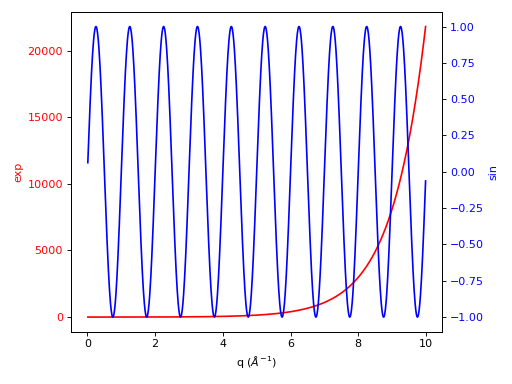
Custom Colors#
Custom Color Cycle (Line / 1D plots)#
The Default Color Cycle doesn’t have to be used. Here is an example where a Custom Color Cycle is chosen. Make sure to fill the list custom_colors with either the HTML hex codes (eg. #b3457f) or recognised names for the desired colours. Both can be found online.
import matplotlib.pyplot as plt
from mantid import plots
from mantid.simpleapi import *
ws=Load('GEM40979.raw')
Number = 12 # How many Spectra to Plot
prop_cycle = plt.rcParams['axes.prop_cycle']
colors = prop_cycle.by_key()['color'] # 10 colors in default cycle
'''Change the following two parameters as you wish'''
custom_colors = ['#0000ffff', 'salmon','#00ff00ff'] # I've chosen Blue, Salmon, Green
fig = plt.figure(figsize = (10,10))
ax1 = plt.subplot(211,projection='mantid')
for i in range(Number):
ax1.plot(ws, specNum = i+1, color=colors[i%len(colors)])
ax1.set_title('Default')
ax1.legend()
ax2 = plt.subplot(212,projection='mantid')
for i in range(Number):
ax2.plot(ws, specNum= i+1, color=custom_colors[i%len(custom_colors)])
ax2.set_title('Custom')
ax2.legend()
fig.suptitle('Line Plots: Color Cycle', fontsize='x-large')
#fig.show()
(Source code, png, hires.png, pdf)


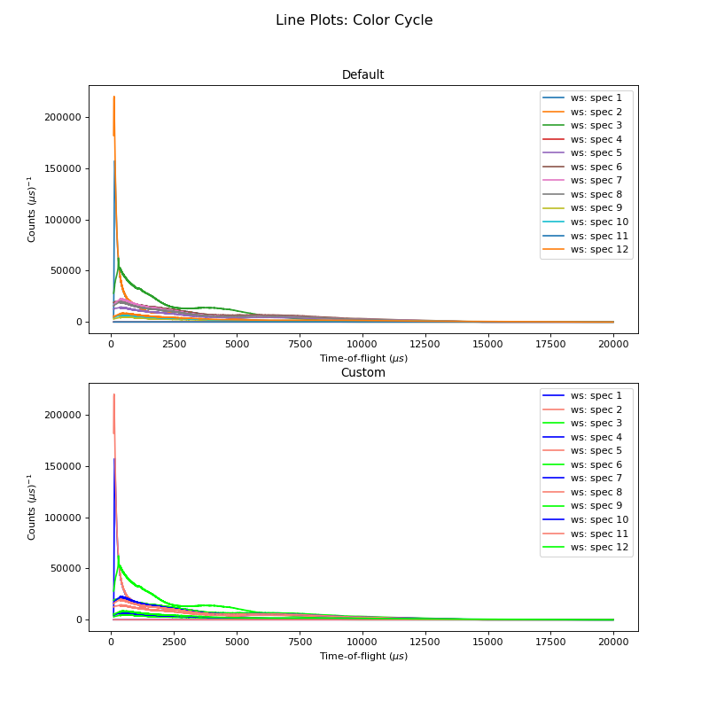
Custom Colormap (MantidWorkbench)#
You can view the premade Colormaps here. These Colormaps can be registered and remain for the current session, but need to be rerun if Mantid has been reopened. Choose the location to Save your Colormap file wisely, outside of your MantidInstall folder!
The following methods show how to Load, Convert from MantidPlot format, Create from Scratch and Visualise a Custom Colormap.
If you already have a Colormap file in an (N by 4) format, with all values between 0 and 1, then use:
1a. Load Colormap and Register
import matplotlib.pyplot as plt
import numpy as np
from matplotlib.colors import ListedColormap, LinearSegmentedColormap
from matplotlib import colormaps
Cmap_Name = 'Beach' # Colormap name
Loaded_Cmap = np.loadtxt("/Path/to/file/Filename.txt")
# Register the Loaded Colormap
Listed_CustomCmap = ListedColormap(Loaded_Cmap, name=Cmap_Name)
colormaps.register(name=Cmap_Name, cmap= Listed_CustomCmap)
# Create and register the reverse colormap
Res = len(Loaded_Cmap)
Reverse = np.zeros((Res,4))
for i in range(Res):
for j in range(4):
Reverse[i][j] = Loaded_Cmap[Res-(i+1)][j]
Listed_CustomCmap_r = ListedColormap(Reverse, name=(Cmap_Name + '_r') )
colormaps.register(name=(Cmap_Name + '_r'), cmap= Listed_CustomCmap_r)
If you have a Colormap file in a Mantid format (N by 3) with all values between 0 and 255, firstly rename the file extension from .map to .txt, then use:
1b. Convert Mantid Colormap and Register
import matplotlib.pyplot as plt
import numpy as np
from matplotlib.colors import ListedColormap, LinearSegmentedColormap
from matplotlib import colormaps
Cmap_Name = 'Beach'
Loaded_Cmap = np.loadtxt("/Path/to/file/Beach.txt")
Res = len(Loaded_Cmap)
Cmap = np.zeros((Res,4))
for i in range(Res):
'''Normalise RGB values, Add 4th column alpha set to 1'''
for j in range(3):
Cmap[i][j] = float(Loaded_Cmap[i][j]) / 255
Cmap[i][3] = 1
'''Checks all values b/w 0 and 1'''
for j in range(4):
if Cmap[i][j] > 1:
print(Cmap[i])
raise ValueError('Values must be between 0 and 1, one of the above is > 1')
if Cmap[i][j] < 0:
print(Cmap[i])
raise ValueError('Values must be between 0 and 1, one of the above is negative')
else:
pass
#np.savetxt("C:\Path\to\File\Filename.txt",Cmap) #uncomment to save to file
# Register the Loaded Colormap
Listed_CustomCmap = ListedColormap(Cmap, name=Cmap_Name)
colormaps.register(name=Cmap_Name, cmap= Listed_CustomCmap)
# Create and register the reverse colormap
Reverse = np.zeros((Res,4))
for i in range(Res):
for j in range(4):
Reverse[i][j] = Cmap[Res-(i+1)][j]
Listed_CustomCmap_r = ListedColormap(Reverse, name=(Cmap_Name + '_r') )
colormaps.register(name=(Cmap_Name + '_r'), cmap= Listed_CustomCmap_r)
To Create a Colormap from scratch, use:
1c. Create and Register
import matplotlib.pyplot as plt
from matplotlib.colors import ListedColormap, LinearSegmentedColormap
import numpy as np
from matplotlib import colormaps
Cmap_Name = 'Beach' # Colormap name
Res = 500 # Resolution of your Colormap (number of steps in colormap)
Re = Res-1
Cmap = np.zeros((Res,4))
for i in range(Res):
'''Input functions inside float(), Divide by Res to normalise'''
Cmap[i][0] = float(Res) / Res #Red #just 1
Cmap[i][1] = float(i) / Re #Green #+ve i divisible by Res-1 = Re
Cmap[i][2] = float(Res-i)**2 / Res**2 #Blue #Make sure Norm_factor correct
Cmap[i][3] = 1
'''Checks all values b/w 0 and 1'''
for j in range(4):
if Cmap[i][j] > 1:
print(Cmap[i])
raise ValueError('Values must be between 0 and 1, one of the above is > 1')
if Cmap[i][j] < 0:
print(Cmap[i])
raise ValueError('Values must be between 0 and 1, one of the above is Negative')
else:
pass
#np.savetxt("C:\Path\to\File\Filename.txt",Cmap) #uncomment to save to file
Listed_CustomCmap = ListedColormap(Cmap, name = Cmap_Name)
colormaps.register(name = Cmap_Name, cmap = Listed_CustomCmap)
# Create and register the reverse colormap
Reverse = np.zeros((Res,4))
for i in range(Res):
for j in range(4):
Reverse[i][j] = Cmap[Res-(i+1)][j]
Listed_CustomCmap_r = ListedColormap(Reverse, name=(Cmap_Name + '_r') )
colormaps.register(name=(Cmap_Name + '_r'), cmap= Listed_CustomCmap_r)
Now the Custom Colormap has been registered, right-click on a workspace and produce a colorfill plot. In Figure Options (Gear Icon in Plot Figure), under the Images Tab, you can use the drop down-menu to select the new Colormap, and use the check-box to select its Reverse!
Otherwise, use a script like this (from above in Section “Simple Plots”) to plot with your new Colormap:
2. Plot New Colormap (change the “cmap” name in line 12 accordingly)
from mantid.simpleapi import Load, ConvertToMD, BinMD, ConvertUnits, Rebin
from mantid import plots
import matplotlib.pyplot as plt
from matplotlib.colors import LogNorm
data = Load('CNCS_7860')
data = ConvertUnits(InputWorkspace=data,Target='DeltaE', EMode='Direct', EFixed=3)
data = Rebin(InputWorkspace=data, Params='-3,0.025,3', PreserveEvents=False)
md = ConvertToMD(InputWorkspace=data,QDimensions='|Q|',dEAnalysisMode='Direct')
sqw = BinMD(InputWorkspace=md,AlignedDim0='|Q|,0,3,100',AlignedDim1='DeltaE,-3,3,100')
fig, ax = plt.subplots(subplot_kw={'projection':'mantid'})
c = ax.pcolormesh(sqw, cmap='Beach', norm=LogNorm())
cbar=fig.colorbar(c)
cbar.set_label('Intensity (arb. units)') #add text to colorbar
#fig.show()
(Source code, png, hires.png, pdf)


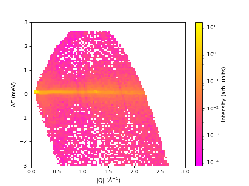
Colormaps can also be created with the colormap package or by concatenating existing colormaps.
Plotting Sample Logs#
The mantid.plots.MantidAxes.plot function can show sample logs. By default,
the time axis represents the time since the first proton charge pulse (the
beginning of the run), but one can also plot absolute time using FullTime=True
import matplotlib.pyplot as plt
from mantid import plots
from mantid.simpleapi import Load
w=Load('CNCS_7860')
fig = plt.figure()
ax1 = fig.add_subplot(211,projection='mantid')
ax2 = fig.add_subplot(212,projection='mantid')
ax1.plot(w, LogName='ChopperStatus5')
ax1.set_title('From run start')
ax2.plot(w, LogName='ChopperStatus5',FullTime=True)
ax2.set_title('Absolute time')
fig.tight_layout()
#fig.show()
(Source code, png, hires.png, pdf)


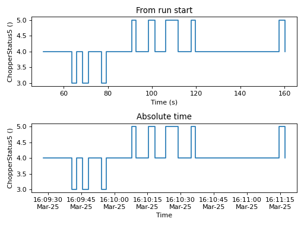
Note that the parasite axes in matplotlib do not accept the projection keyword.
So one needs to use mantid.plots.axesfunctions.plot instead.
import matplotlib.pyplot as plt
import mantid.plots.axesfunctions as axesfuncs
from mantid.simpleapi import Load
w=Load('CNCS_7860')
fig, ax = plt.subplots(subplot_kw={'projection':'mantid'})
ax.plot(w,LogName='ChopperStatus5')
axt=ax.twiny()
axesfuncs.plot(axt,w,LogName='ChopperStatus5', FullTime=True)
#fig.show()
(Source code, png, hires.png, pdf)


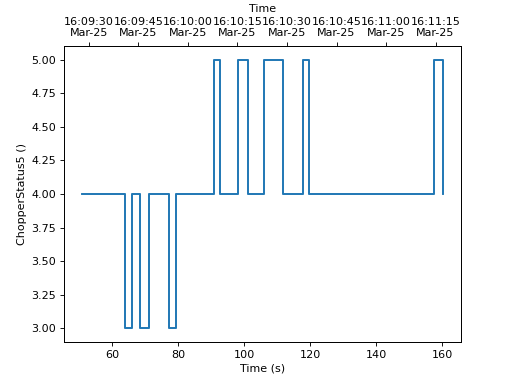
If a TimeROI is applied to the workspace, the Sample Logs can also include shaded regions to indicate the regions of the logs that are being excluded by the TimeROI.
import matplotlib.pyplot as plt
from mantid import plots
from mantid.simpleapi import Load, FilterByTime
w = Load('CNCS_7860')
ws_filtered = FilterByTime(w, StartTime=60, StopTime=120)
fig = plt.figure()
ax1 = fig.add_subplot(211,projection='mantid')
ax2 = fig.add_subplot(212,projection='mantid')
ax1.plot(ws_filtered, LogName='ChopperStatus5',ShowTimeROI=True)
ax1.set_title('From run start')
ax2.plot(ws_filtered, LogName='ChopperStatus5',FullTime=True,ShowTimeROI=True)
ax2.set_title('Absolute time')
fig.tight_layout()
#fig.show()
(Source code, png, hires.png, pdf)


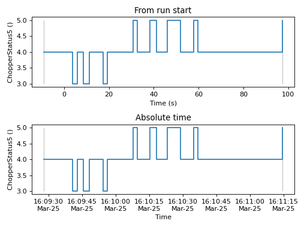
Complex plots#
One common type of a slightly more complex figure involves drawing an inset.
import matplotlib.pyplot as plt
import numpy as np
from mantid import plots
from mantid.simpleapi import CreateWorkspace, FFT
from matplotlib import rcParams
import warnings
x=np.linspace(0,10,250)
y=np.cos(2*np.pi*1.1*x)*np.exp(-x/7.)
err=np.sqrt(0.01+x/200.)
w=CreateWorkspace(x,y,err,UnitX='tof')
fft=FFT(w)
# make all ticks point in
rcParams['xtick.direction'] = 'in'
rcParams['ytick.direction'] = 'in'
fig, ax = plt.subplots(subplot_kw={'projection':'mantid'})
ax.errorbar(w,'ks')
ax.set_ylabel('Asymmetry')
ax.set_ylim(-1.5,2)
ax_inset=fig.add_axes([0.7,0.72,0.2,0.2],projection='mantid')
ax_inset.plot(fft,specNum=6)
ax_inset.set_xlim(0,2)
ax_inset.set_xlabel('Frequency (MHz)')
ax_inset.set_ylabel('|FFT|')
# note that thight_layout will produce a warning here "This figure includes
# Axes that are not compatible with tight_layout, so its results might be incorrect."
with warnings.catch_warnings():
warnings.simplefilter("ignore", category=UserWarning)
fig.tight_layout()
#fig.show()
(Source code, png, hires.png, pdf)


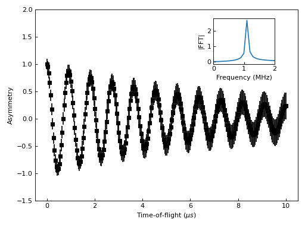
Plotting dispersion curves on multiple panels can also be done using matplotlib:
import matplotlib.pyplot as plt
import numpy as np
from matplotlib.gridspec import GridSpec
from mantid.simpleapi import CreateMDHistoWorkspace
from mantid import plots
# Generate nice (fake) dispersion data
# Gamma to K
q = np.arange(0,0.333,0.01)
e = np.arange(0,60)
x,y = np.meshgrid(q,e)
omega_hh = 20. * np.sin(np.pi*x*1.5)
I_hh = np.exp(-x*5.)
signal = I_hh * np.exp(-(y-omega_hh)**2)
signal[y>25+100*x**2]=np.nan
ws1=CreateMDHistoWorkspace(Dimensionality=2,
Extents='0,0.3333,0,60',
SignalInput=signal,
ErrorInput=np.sqrt(signal),
NumberOfBins='{0},{1}'.format(len(q),len(e)),
Names='Dim1,Dim2',
Units='MomentumTransfer,EnergyTransfer')
# K to M
q = np.arange (0.333,0.5, 0.01)
x,y = np.meshgrid(q,e)
omega_hm2h=20. * np.cos(np.pi*(x-0.333))
signal = np.exp(-(y-omega_hm2h)**2)
signal[y>35]=np.nan
ws2=CreateMDHistoWorkspace(Dimensionality=2,
Extents='0.3333,0.5,0,60',
SignalInput=signal,
ErrorInput=np.sqrt(signal),
NumberOfBins='{0},{1}'.format(len(q),len(e)),
Names='Dim1,Dim2',
Units='MomentumTransfer,EnergyTransfer')
d=6.7
a=2.454
#Gamma is (0,0,0)
#A is (0,0,1/2)
#K is (1/3,1/3,0)
#M is (1/2,0,0)
gamma_a=np.pi/d
gamma_m=2.*np.pi/np.sqrt(3.)/a
m_k=2.*np.pi/3/a
gamma_k=4.*np.pi/3/a
fig=plt.figure(figsize=(12,5))
gs = GridSpec(1, 4,
width_ratios=[gamma_k,m_k,gamma_m,gamma_a],
wspace=0)
ax1 = plt.subplot(gs[0],projection='mantid')
ax2 = plt.subplot(gs[1],sharey=ax1,projection='mantid')
ax3 = plt.subplot(gs[2],sharey=ax1)
ax4 = plt.subplot(gs[3],sharey=ax1)
ax1.pcolormesh(ws1)
ax2.pcolormesh(ws2)
ax3.plot([0,0.5],[0,17.])
ax4.plot([0,0.5],[0,10])
#Adjust plotting parameters
ax1.set_ylabel('E (meV)')
ax1.set_xlabel('')
ax1.set_xlim(0,1./3)
ax1.set_ylim(0.,40.)
ax1.set_title(r'$[\epsilon,\epsilon,0], 0 \leq \epsilon \leq 1/3$')
ax1.set_xticks([0,1./3])
ax1.set_xticklabels(['$\Gamma$','$K$'])
#ax1.spines['right'].set_visible(False)
ax1.tick_params(direction='in')
ax2.get_yaxis().set_visible(False)
ax2.set_xlim(1./3,1./2)
ax2.set_xlabel('')
ax2.set_title(r'$[1/3+\epsilon,1/3-2\epsilon,0], 0 \leq \epsilon \leq 1/6$')
ax2.set_xticks([1./2])
ax2.set_xticklabels(['$M$'])
#ax2.spines['left'].set_visible(False)
ax2.tick_params(direction='in')
#invert axis
ax3.set_xlim(1./2,0)
ax3.get_yaxis().set_visible(False)
ax3.set_title(r'$[\epsilon,0,0], 1/2 \geq \epsilon \geq 0$')
ax3.set_xticks([0])
ax3.set_xticklabels(['$\Gamma$'])
ax3.tick_params(direction='in')
ax4.set_xlim(0,1./2)
ax4.get_yaxis().set_visible(False)
ax4.set_title(r'$[0,0,\epsilon], 0 \leq \epsilon \leq 1/2$')
ax4.set_xticks([1./2])
ax4.set_xticklabels(['$A$'])
ax4.tick_params(direction='in')
#fig.show()
(Source code, png, hires.png, pdf)


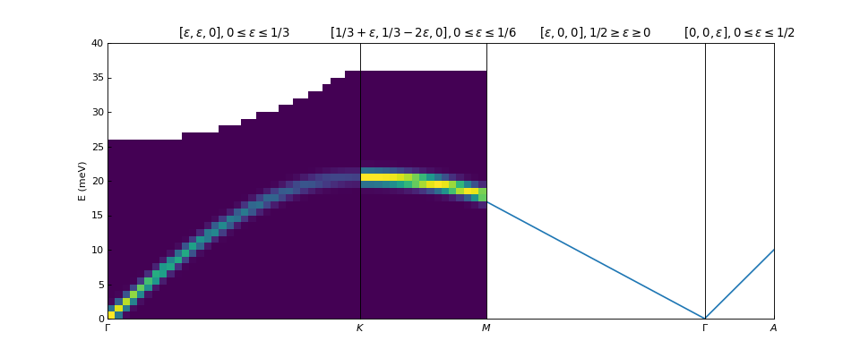
Change Matplotlib Defaults#
It is possible to alter the default appearance of Matplotlib plots, e.g. linewidths, label sizes,
colour cycles etc. This is most readily achieved by setting the rcParams at the start of a
Mantid Workbench session. The example below shows a plot with the default line width, followed be resetting the parameters with rcParams. An example with many of the
editable parameters is available at the Matplotlib site.
import numpy as np
import matplotlib.pyplot as plt
# Set up the data
x = np.linspace(0, 2 * np.pi)
offsets = np.linspace(0, 2*np.pi, 4, endpoint=False)
# Create array with shifted-sine curve along each column
yy = np.transpose([np.sin(x + phi) for phi in offsets])
# Plot the data
fig, ax = plt.subplots()
ax.plot(yy)
## Reset the parameters
import matplotlib as mpl
mpl.rcParams['lines.linewidth'] = 2.0
mpl.rcParams['axes.grid'] = True
mpl.rcParams['axes.facecolor'] = (0.95, 0.95, 0.95)
mpl.rcParams['grid.linestyle'] = '--'
# Plot the data
fig, ax = plt.subplots()
ax.plot(yy)
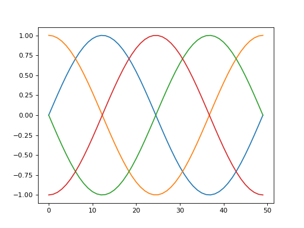


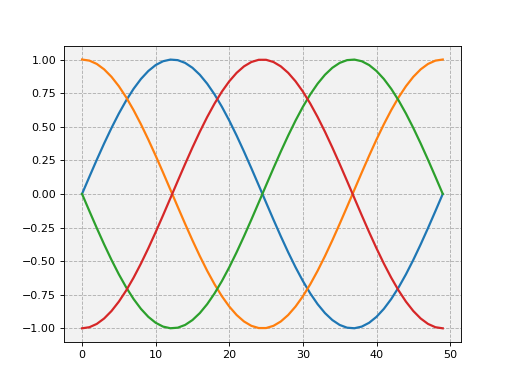


For much more on customising the graph appearance see the Matplotlib documentation.
A list of some common properties you might want to change and the keywords to set:
Parameter |
Keyword |
Default |
Error bar cap |
|
0 |
Line width |
|
1.25 |
Grid on/off |
|
False |
Ticklabel size |
|
medium |
Minor ticks on/off |
|
False |
Face colour |
|
white |
Font type |
|
sans-serif |
A much fuller list of properties is available in the Matplotlib documentation.